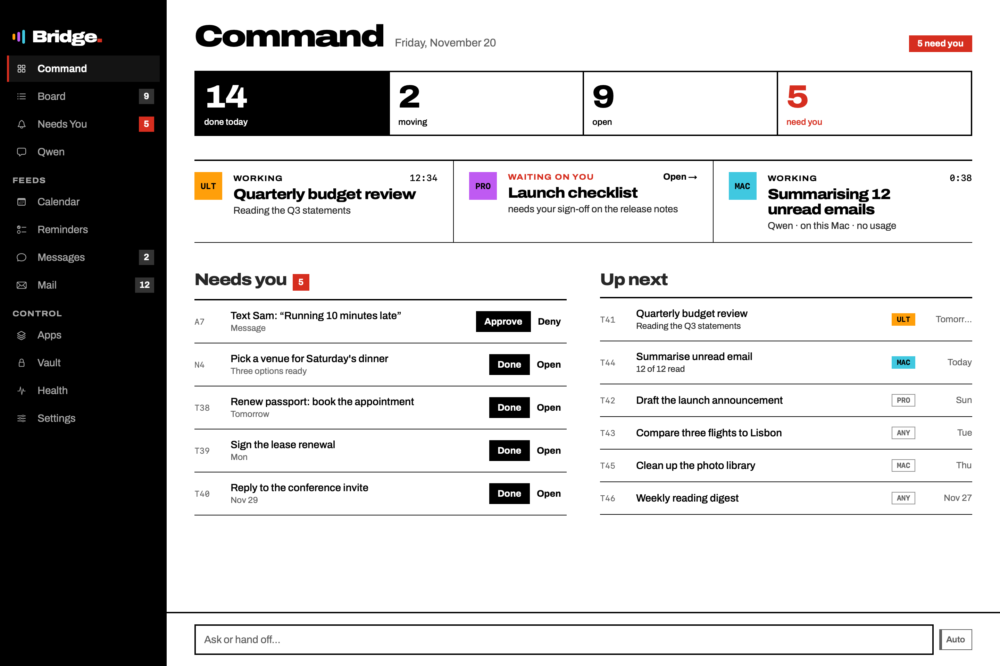
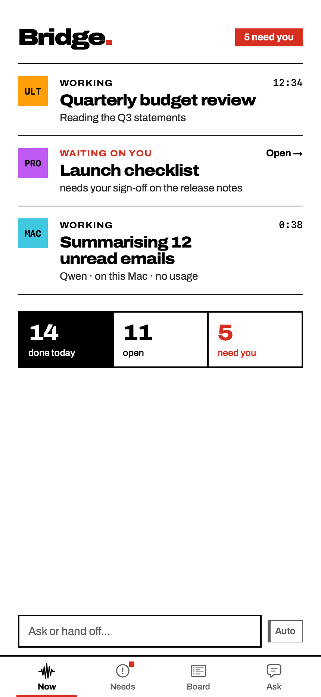
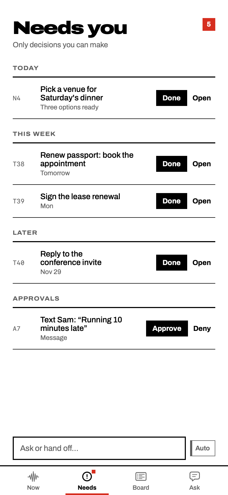
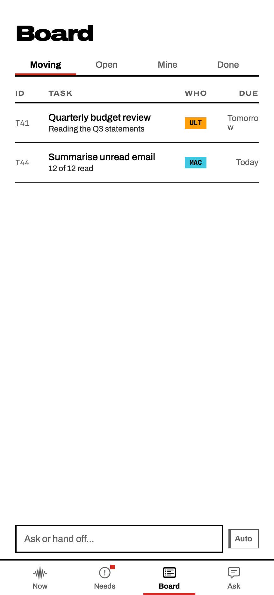
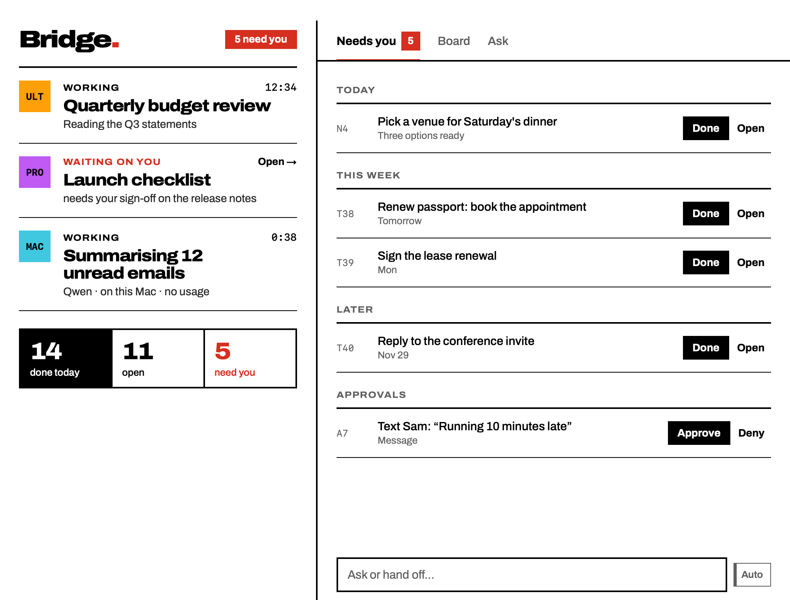

Bridge.
Mac + iPhone Duo · native SwiftUI
One board for two Claude accounts and a model running on my Mac. See what each one is doing, decide what only you can, and hand off work in a line.

What it does
Now
One lane per runner: the chat it's in, the step it's on, a live timer. A runner waiting on you turns red and names the chat that's waiting. Only a working runner shows its colour.
Needs you
Tasks only you can do, decisions the runners raised, and actions that wait for your OK, like a message to send. Done, Approve and Deny apply instantly and roll back if the engine refuses.
Board
Moving, open, yours and done, with a fixed ID column, who each task is for and when it's due.
Ask
Type a request and Bridge routes it: to Qwen when local is enough, to Claude when it needs the web, code or judgment. It says why, and one tap sends it to the other account instead.
On the iPhone Duo
Folded, it's one screen at a time. Unfolded, Now stays on the left and the rest sits beside it.




How it works
ULTPRO Two Claude accounts
Each works in its own desktop app. Bridge reads which chat is open and what it's doing, and posts handoffs into the right chat.
MAC Qwen, on the Mac
A local model that takes the first pass at every request: summaries, drafts, sorting. It hands off with what's left when a job needs Claude.
One engine, two apps
- The engine keeps the board in SQLite and writes a snapshot every second.
- BridgeKit, one SwiftUI module, draws the board on both devices. The Mac redraws the moment the snapshot changes.
- The phone reads a copy from iCloud Drive. Its taps travel back as small request files, and a relay on the Mac runs them in about 0.1 s.
- The relay accepts only
done,approve,deny,assignandask, and never runs a shell.
Design
The same system as this site: a white page, black type, one red and Archivo set wide and heavy. Corners are square, rules are 2px black and figures sit in joined tombstones. The Mac sidebar is the one dark room.